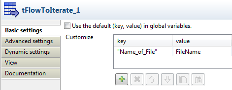

|
Famille du composant |
Orchestration | |
|
Fonction |
Le composant tFlowToIterate effectue une itération sur les données d'entrée et génère des variables globales. | |
|
Objectif |
Le tFlowToIterate est utilisé afin de lire des données ligne par ligne et de stocker les entrées des données dans des variables globales itératives. | |
|
Basic settings |
Use the default (key, value) in global variables |
Lorsque cette case est cochée, le système utilise la valeur par défaut de la variable globale utilisée dans le Job. |
|
|
Customize |
key : Entrez le nom de la nouvelle variable globale. Appuyez sur Ctrl+Espace pour accéder à l’ensemble des variables disponibles, qu’elles soient globales ou définies par l’utilisateur. |
|
|
|
value : Cliquez dans la cellule pour accéder à la liste des colonnes rattachées à la variable globale définie. |
|
Utilisation |
Le tFlowToIterate n’est pas un composant de début, et il requiert un composant de sortie. | |
|
Global Variables |
|
Number of Lines : indique le nombre de lignes traitées. Disponible comme variable After. Retourne un entier. Current iteration : Indique le nombre d'itérations. Disponible comme variable Flow. Retourne un entier. Pour plus d’informations concernant les variables, consultez le Guide utilisateur de Talend Open Studio. |
|
Connections |
|
Liens de sortie (d’un composant à un autre) : Row : Iterate. Trigger : Run if, OnComponentOk, OnComponentError.
Liens d’entrée (d’un composant à un autre) : Row : Main.
Pour plus d’informations concernant les liens, consultez le Guide utilisateur de Talend Open Studio. |
Le scénario suivant décrit un Job permettant de lire une liste de fichiers à partir d’un fichier d’entrée donné. Il effectue également une itération sur chacun des fichiers et affiche leur contenu ligne par ligne dans la console de log Run.
A partir de la Palette, cliquez-déposez les composants suivants dans l’espace de modélisation : deux tFileInputDelimited, un tFlowToIterate et un tLogRow.
Cliquez-droit sur chacun des composants pour les relier entre eux. Connectez le premier tFileInputDelimited au tFlowToIterate à l’aide d’un lien de type Row Main, puis le tFlowToIterate au deuxième tFileInputDelimited à l’aide d’un lien de type Iterate, enfin le second tFileInputDelimited au tLogRow à l’aide d’un lien de type Row Main.

Dans l’espace de modélisation graphique, double-cliquez sur le premier tFileInputDelimited pour afficher sa vue Component.
Dans l'onglet Basic settings, cliquez sur le bouton [...] situé à côté du champ File Name pour déterminer le chemin d’accès au fichier d’entrée.
Note
Le champ File Name est obligatoire.

Le fichier d’entrée utilisé dans ce scénario est Customers. Il s’agit d’un fichier texte contenant trois autres fichiers texte simples : Name, E-mail et Address. Le fichier Name est constitué d’une colonne contenant le nom des clients et le fichier E-mail d’une colonne contenant l’adresse email de ces clients. Le troisième fichier texte, Address, est composé d’une colonne comprenant l’adresse postale des clients.
Renseignez les autres champs en fonction de votre fichier. Pour plus d’informations sur le tFileInputDelimited, consultez la section intitulée « Propriétés du tFileInputDelimited ». Dans ce scénario, l’en-tête, le pied de page et le nombre limite de lignes à traiter ne sont pas définis. Donc, laissez les champs Header (en-tête) et Footer (pied de page) et Limit par défaut.
Cliquez sur le bouton Edit schema pour décrire la structure des données du fichier d’entrée. Dans ce scénario, le schéma comporte une seule colonne appelée FileName.

Dans l’espace de modélisation graphique, sélectionnez le tFlowToIterate et cliquez sur l'onglet Component pour définir sa configuration de base (Basic settings).
Cliquez sur le bouton [+] pour ajouter des lignes de paramètres et définissez vos variables. Cliquez dans la cellule key afin de saisir le nom de la variable souhaité. Dans ce scénario, la variable est la suivante :
"Name_of_File".Vous pouvez également cocher la case Use the default (key, value) in global variables pour utiliser la valeur par défaut des variables globales.
Dans l’espace de modélisation graphique, double-cliquez sur le second composant tFileInputDelimited pour ouvrir sa vue Component.

Dans le champ File Name, renseignez le répertoire des fichiers à lire puis appuyez sur les touches Ctrl+Espace pour sélectionner la variable globale "Name_of_File". Dans ce scénario, la syntaxe est la suivante :
"C:/scenario/flow_to_iterate/"+((String)globalMap.get("Name_of_File"))Cliquez sur Edit schema afin de définir le nom de la colonne du schéma. Nommez-la, dans ce scénario, RowContent.
Renseignez les autres champs selon vos besoins. Pour plus d’informations, consultez la section intitulée « Propriétés du tFileInputDelimited ».
Dans l’espace de modélisation graphique, double-cliquez sur le dernier composant, le tLogRow, pour afficher sa vue Component et définir sa configuration de base (Basic settings).

Définissez les paramètres selon vos besoins. Pour plus d’informations, consultez la section intitulée « Propriétés du tLogRow ».